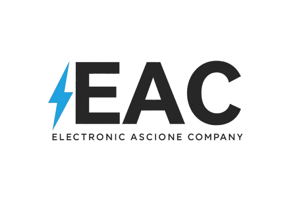

Controllo dello stato di rete, server, storage e dispositivi supportati.
Tecnologia integrata
Un solo sistema.
Un solo sistema.
Tutto connesso.
Progettiamo e integriamo domotica, sicurezza, reti e infrastrutture digitali per abitazioni e aziende. Meno sistemi isolati, più controllo.
- Progetto su misura
- Installazione e integrazione
- Assistenza continuativa

SISTEMA ATTIVO
Smart spacesControllo e scenari
NetworkingWi-Fi · LAN · VPN
SicurezzaVideo · Accessi
Dati & serverBackup · NAS
Un ecosistema, non singoli dispositivi
Smart Home
Smart Business
Security
Infrastructure
Web & App
Cosa facciamo
Soluzioni che lavorano insieme.
Partiamo dall’ambiente reale e costruiamo l’infrastruttura adatta: connettività, automazione, protezione e gestione diventano parti coordinate dello stesso progetto.
Domotica e smart building
Luci, clima, tapparelle, accessi, energia e scenari coordinati in un’esperienza semplice da usare, a casa e in azienda.
- Home Assistant
- Controllo locale
- Dashboard
Reti professionali
Wi-Fi, cablaggio, ponti radio, switching e segmentazione progettati per coprire spazi reali e sostenere tutti i sistemi connessi.
- Wi-Fi & mesh
- VLAN
- VPN
Videosorveglianza e sicurezza
Telecamere IP, registrazione, controllo accessi e notifiche integrate con la rete e configurate sulle esigenze del luogo.
- Telecamere IP
- NVR
- Controllo accessi
Server, backup e automazione
NAS, backup, accesso remoto e workflow digitali per proteggere i dati e ridurre attività ripetitive nei processi aziendali.
- NAS & backup
- Automazioni
- Assistenza
Automazioni aziendali
Documenti, richieste, notifiche e attività ripetitive collegati in flussi ordinati, verificabili e su misura.
- Workflow
- Documenti
- AI supervisionata
Siti aziendali ed e-commerce
Siti veloci e responsive per presentare l’azienda, raccogliere contatti e vendere prodotti o servizi online.
- Responsive
- SEO
- E-commerce
Portali e applicazioni web
Aree clienti, strumenti interni e applicazioni su misura accessibili ovunque direttamente dal browser.
- Web app
- Area clienti
- Gestionali
Dashboard e integrazioni
Dati, impianti e servizi riuniti in interfacce operative semplici, collegate tramite API e automazioni.
- Dashboard
- API
- Integrazioni
Automazione di macchinari
Controllo, sensori, interfacce e raccolta dati per rendere macchine e linee più coordinate e semplici da gestire.
- PLC & HMI
- Revamping
- Monitoraggio
Automazioni aziendali
Meno passaggi manuali. Più controllo sul lavoro.
Colleghiamo strumenti, documenti e attività che oggi richiedono copia-incolla, verifiche ripetitive o continui passaggi tra persone. Ogni flusso viene progettato sul processo reale e mantiene visibili stato, responsabilità ed esito.
01
Documenti e richieste
Classificazione, estrazione dei dati, archiviazione e inoltro verso la persona o il sistema corretto.
02
Workflow operativi
Moduli, email, cartelle, notifiche e ticket collegati in sequenze automatiche e verificabili.
03
AI con supervisione
Ricerca, sintesi e preparazione di bozze sui contenuti autorizzati, con controllo umano nei passaggi importanti.
Richiesta ricevutaEmail, modulo o documento
ACQUISITADati letti e ordinatiClassificazione e campi utili
VERIFICATAAttività assegnataCartella, ticket o responsabile
INVIATAEsito registratoStato, log e notifica finale
COMPLETATracciabileModulareIntegrabile
Automazione di macchinari
Dal comando al ciclo. Tutto sotto controllo.
Progettiamo sistemi di controllo e integrazione per macchine e piccole linee: dai segnali sul campo alla supervisione, con soluzioni dimensionate sul processo reale e sull’impianto esistente.
01
Controllo macchina
PLC, sensori, attuatori e interfacce HMI organizzati per governare sequenze, consensi e parametri operativi.
02
Revamping e integrazione
Aggiornamento dei controlli e collegamento con reti, gestionali o sistemi di raccolta dati già presenti.
03
Monitoraggio e diagnostica
Stati, allarmi, conteggi e informazioni di produzione visibili in modo chiaro per facilitare controllo e assistenza.
Sensori e consensiPresenza, posizione e condizioni
PRONTILogica di controlloSequenze e parametri di processo
IN CICLOAttuatori e comandiUscite, motori e dispositivi
ATTIVIDati e diagnosticaConteggi, stati e segnalazioni
ONLINEModulareConnessaAssistibile
Reti professionali
Una rete stabile è la base di tutto.
Progettiamo connettività e infrastrutture che coprono gli spazi reali, separano i flussi importanti e fanno lavorare insieme dispositivi, persone e servizi.
01
Wi-Fi e copertura
Access point, mesh e ponti radio dimensionati per abitazioni, uffici, negozi e strutture distribuite.
02
Cablaggio e segmentazione
Switching, VLAN e collegamenti ordinati per tenere separati dati, ospiti, videosorveglianza e automazioni.
03
Accesso remoto sicuro
VPN e monitoraggio per collegarsi agli impianti e intervenire con controllo e continuità.
Connessione principaleFibra, ponte radio o backup
ONLINEWi-Fi e access pointCopertura e roaming coordinati
ATTIVIVLAN e sicurezzaFlussi separati e protetti
PROTETTIAccesso remotoAssistenza e controllo autorizzati
PRONTOCopertaSegmentataMonitorata
Videosorveglianza e sicurezza
Vedere meglio. Intervenire prima.
Integriamo telecamere IP, registrazione, controllo accessi e notifiche in un sistema chiaro da consultare e coerente con la rete dell’edificio.
01
Telecamere e NVR
Inquadrature, registrazione e conservazione dimensionate sul luogo e sulle esigenze di controllo.
02
Accessi e autorizzazioni
Controllo di porte, varchi e aree con profili e notifiche pensati per le persone giuste.
03
Notifiche integrate
Eventi importanti segnalati rapidamente, con accesso remoto e una gestione ordinata degli allarmi.
Stato sicurezzaTutti i punti attivi
04
Ingresso
AttivoControllo accessiArea esterna
OnlineTelecamere IPRegistrazione
NVRArchivio disponibileNotifiche
PronteEventi importantiLiveEventiAccessi
Server, backup e automazione
Dati disponibili. Sistemi più tranquilli.
Organizziamo server, NAS, copie di sicurezza e accesso remoto per proteggere le informazioni e rendere più semplici le attività quotidiane.
01
Storage e accesso
File, utenti e permessi ordinati in uno spazio centrale raggiungibile quando serve.
02
Backup verificati
Copie automatiche, versioni e procedure di ripristino pensate per ridurre il rischio di perdere dati.
03
Workflow collegati
Notifiche, cartelle, documenti e attività ripetitive collegati per risparmiare tempo e passaggi.
Archivio centraleFile e servizi condivisi
ONLINECopia localeVersioni automatiche
COMPLETACopia esternaContinuità e recupero
VERIFICATAAccesso remotoControllo e assistenza
SICUROProtettoRipristinabileConnesso
Domotica e smart building
La tecnologia scompare. Lo spazio risponde.
Un unico sistema coordina luci, clima, tapparelle, accessi, sicurezza ed energia. I comandi fisici restano semplici; scenari e dashboard aggiungono controllo senza complicare la vita quotidiana.
01
Scenari personalizzati
Uscita, rientro, notte, apertura o chiusura attività: più azioni diventano un solo comando.
02
Comfort ed energia
Clima per zone, illuminazione, presenza e consumi coordinati in base agli orari e all’uso reale.
03
Controllo locale
Dashboard chiara, integrazione multi-dispositivo e funzionamento pensato per affidabilità e privacy.
Stato generaleTutto sotto controllo
92
Zona giorno
22.5°Clima comfortSicurezza
AttivaPerimetro protettoEnergia
2.4 kWConsumo attualeEsterni
AutoLuci e irrigazioneRientroNotteFuori casa
Copie, versioni e procedure di ripristino dimensionate sulle informazioni da proteggere.
Il sistema può crescere per fasi con nuove aree, automazioni e integrazioni.
Siti web e sviluppo app
Esperienze digitali costruite intorno al tuo lavoro.
Realizziamo siti e applicazioni web responsive che presentano l’azienda, raccolgono richieste e trasformano attività operative in strumenti semplici da usare. Il progetto può collegarsi ai flussi e all’infrastruttura già presenti.
01
Siti aziendali ed e-commerce
Presenza online veloce, chiara e ottimizzata per smartphone, con cataloghi e funzioni commerciali quando servono.
02
Portali e applicazioni web
Aree clienti, strumenti interni, gestione richieste e applicazioni su misura accessibili da browser.
03
Dashboard e integrazioni
Dati, impianti, documenti e servizi riuniti in interfacce operative collegate tramite API e workflow.
Responsive designWeb appArea clientiDashboardIntegrazioni API
ATTIVITÀ OGGI24
Come lavoriamo
Dal problema al sistema finito.
Ogni progetto viene dimensionato sul contesto: niente pacchetti forzati, niente tecnologia aggiunta senza un motivo.
Ascolto e sopralluogo
Raccogliamo obiettivi, vincoli, spazi e criticità dell’impianto o del processo esistente.
Progetto tecnico
Definiamo architettura, priorità, componenti, integrazioni e possibilità di crescita.
Installazione e test
Configuriamo il sistema, verifichiamo il funzionamento e consegniamo un’esperienza ordinata.
Supporto nel tempo
Assistenza, manutenzione e aggiornamenti aiutano il sistema a restare affidabile e utile.
Per chi
Spazi diversi. Una regia unica.
Le soluzioni EAC sono pensate per chi vuole un interlocutore capace di collegare impianti, rete e strumenti digitali in modo coerente.
Abitazioni e ville
Comfort, sicurezza, copertura di rete e controllo dei consumi senza frammentare tutto in app separate.
Uffici, negozi e studi
Reti affidabili, accessi, sicurezza, backup e automazioni che semplificano la gestione quotidiana.
Hotel, B&B e capannoni
Copertura, monitoraggio e controllo coordinati anche su ambienti estesi o più aree operative.

Il marchio
Electronic Ascione Company
EAC riunisce competenze impiantistiche e digitali in un unico interlocutore: dalla rete che collega gli ambienti ai sistemi che li rendono più sicuri, efficienti e semplici da gestire.
Inizia da qui
Parlaci del tuo progetto.
Compila i campi con le informazioni principali. In seguito collegheremo questo modulo al sistema che gestirà e inoltrerà le richieste.